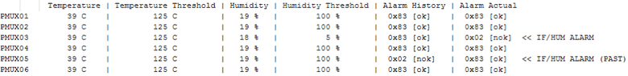

rdi.route().showPmuxSensorStatus()
Reads the actual sensor values for temperature and humidity of all available MUX cards and displays the values in the UI report window.
- Alarm History: The latched alarm status of the first read.
- Alarm Actual: The current status of the alarm from the second read. The alarm condition is still active if this value is not equal to 0x83.
Note A PMUX01 card will automatically
open all switches if the temperature threshold or the humidity threshold is
exceeded.
Usage of the function:
- The function can be called only in the code‑based mode. For more information, refer to Execution mode in topic SmartRDI.
- The function displays suitable results only in online mode.
- Calling this function requires about 500 milliseconds due to the internal sensor cycle time.
Syntax
routeGroup& showPmuxSensorStatus();
- List of parameters
- There are no parameters.
- Return value
- A reference to the routeGroup object.
Example
Example 1
RDI_INIT();
...
...
ON_FIRST_INVOCATION_BEGIN();
{
...
...
rdi.route().showPmuxSensorStatus().execute();
...
...
RDI_BEGIN();
{
...
...
}
RDI_END();
...
...
}
ON_FIRST_INVOCATION_END();
...
...The code above results in the following output:

Functional changes
- Introduced in SmartRDI 2.5.0